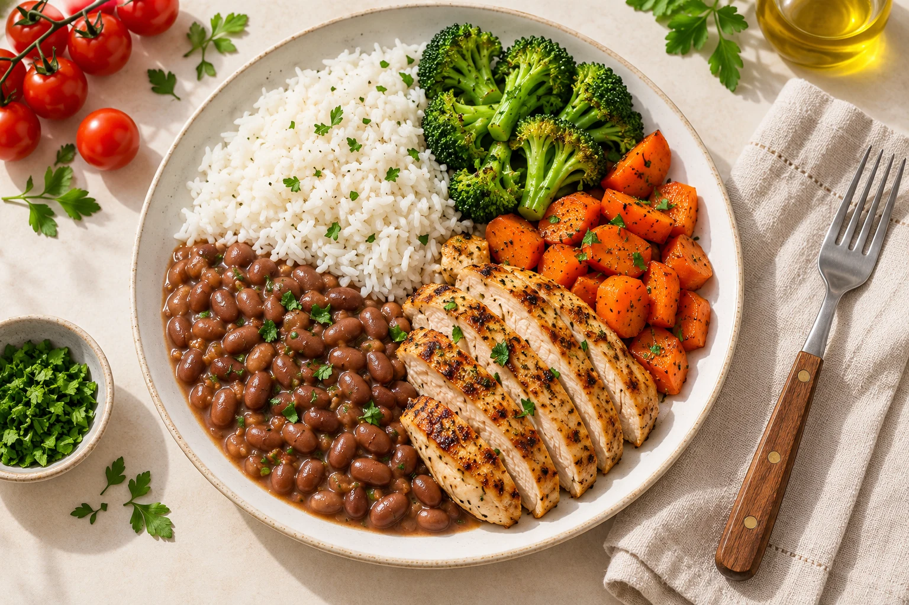
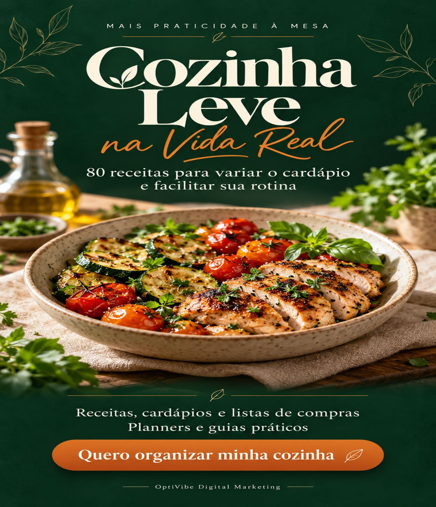
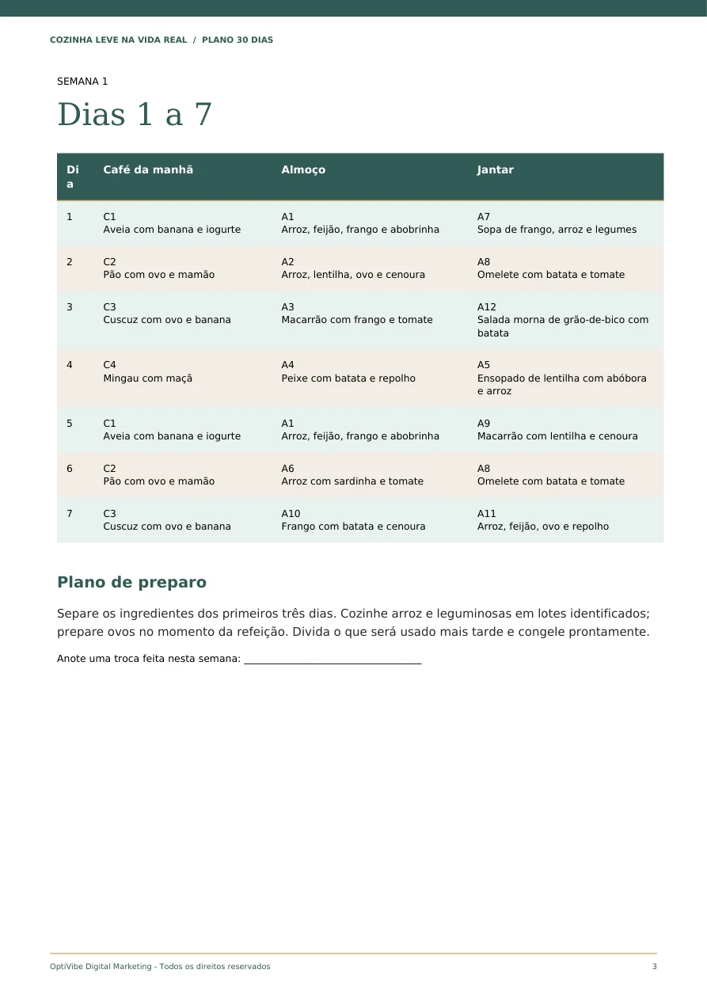
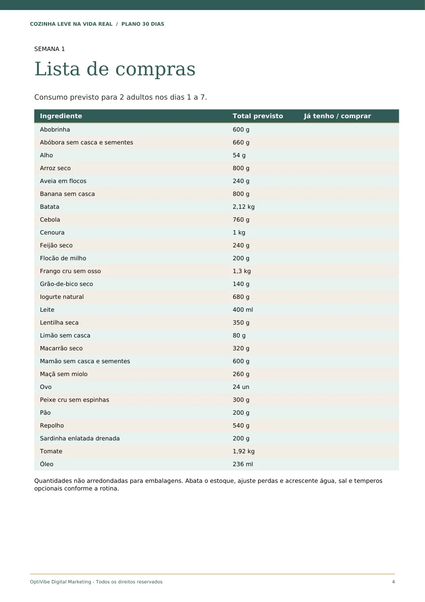
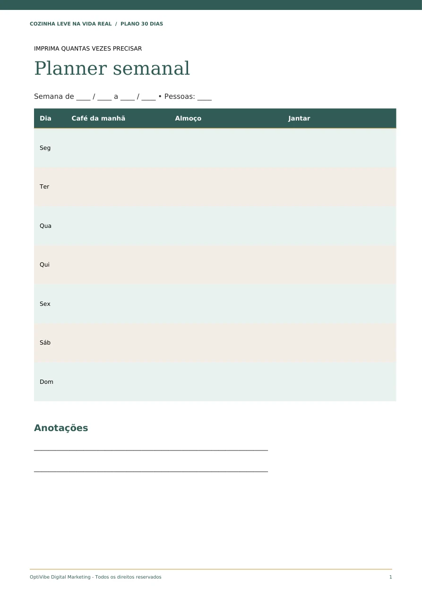
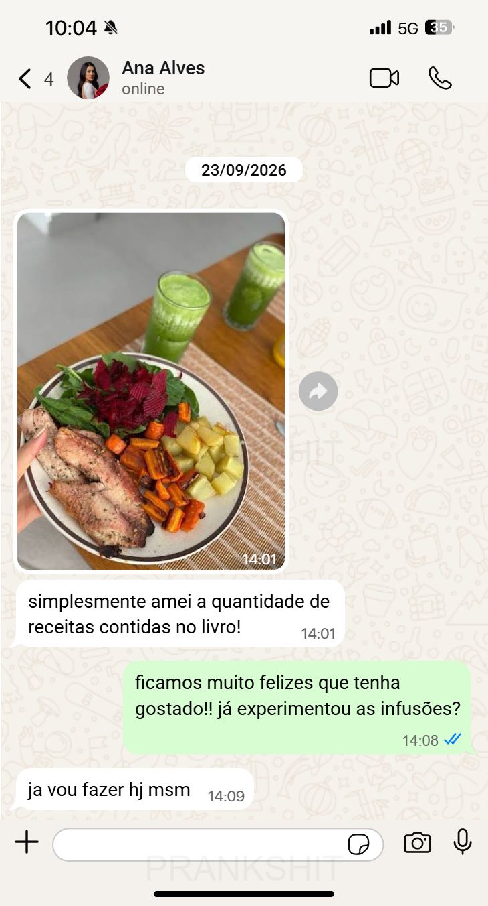
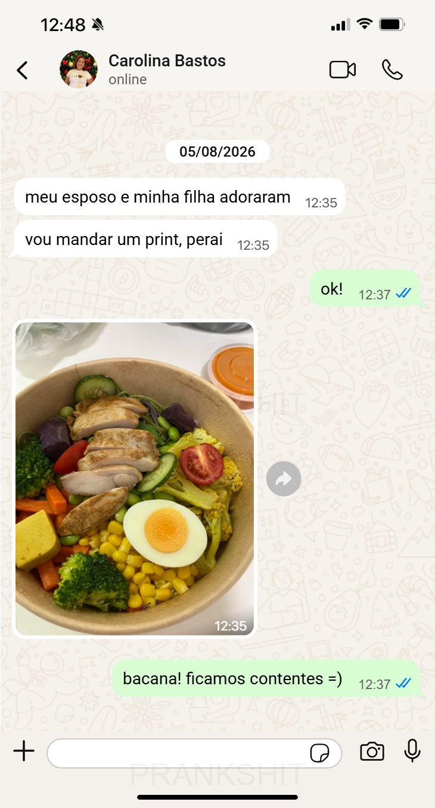

Seu cardápio tem um ponto de partida.
Use as sugestões dos 30 dias e ajuste as refeições à sua semana. Você não precisa inventar um menu inteiro.
RECEITAS + CARDÁPIOSComer bem fica mais fácil quando você sabe o que preparar.
Tire o “o que vou cozinhar hoje?” da sua cabeça. Tenha receitas, um plano de 30 dias e listas de compras para levar mais variedade à mesa, sem começar do zero toda semana.
Quero organizar minha cozinha
30 dias com um planoDa lista de compras à sua mesa
Você salva uma receita, esquece onde ela está, abre a geladeira e falta justamente um ingrediente. No fim, repete o mesmo prato ou decide tudo com fome.
O Cozinha Leve na Vida Real reúne ideias e organização no mesmo caminho: escolher o que faz sentido, comprar com uma lista e preparar com um plano.
Três decisões conectadas para transformar um arquivo de receitas em algo que você realmente usa.
Use as sugestões dos 30 dias e ajuste as refeições à sua semana. Você não precisa inventar um menu inteiro.
RECEITAS + CARDÁPIOSConfira a despensa, retire o que já tem e ajuste as quantidades antes de ir ao mercado.
LISTAS POR PERÍODOOrganize os preparos e aproveite ingredientes ao longo dos dias. No Premium, tenha também um calendário de preparo e congelamento.
PREPAROS REUTILIZÁVEISEstes materiais fazem parte dos dois pacotes.
Seu repertório de receitas e dicas, com os materiais de apoio já incluídos na edição. Para consultar, escolher e voltar sempre que precisar.
Menos busca por receitas espalhadas.Quatro cardápios semanais mais dois dias, com sugestões de café da manhã, almoço e jantar. A versão padrão considera dois adultos.
Menos decisões de última hora.Ingredientes organizados por período para acompanhar o plano. Confira o estoque e ajuste às refeições que fará em casa.
Mais clareza na hora de comprar.Prévias do ebook principal e dos materiais de apoio




Produto digital. Não há envio de livro físico.
Escolha a primeira semana e use o cardápio como referência. Você pode começar em qualquer dia do mês.
Consulte o ebook e combine as sugestões com os ingredientes e sabores que fazem parte da sua casa.
O Premium inclui listas em Word para editar manualmente. Ajuste antes de sair, sem refazer tudo do zero.
No Premium, a versão para uma pessoa organiza um mês inteiro com quantidades e compras próprias.
Por R$ 20 a mais que o Básico, você recebe ferramentas independentes para adaptar, imprimir e organizar o preparo.
Conhecer o pacote PremiumUm plano alternativo com foco em ingredientes simples e reaproveitamento.
Cardápios e compras pensados para quem cozinha sozinho.
Listas em Word e planners em PDF para compras, menu, freezer, gastos e rotina.
Uma referência para organizar sessões de cozinha e armazenamento.
Alternativas para adaptar ingredientes sem ficar sem uma ideia de preparo.
Confira o que está incluído e conclua o pagamento na plataforma de compra.
Após a aprovação do pagamento, use as instruções enviadas pela plataforma ao e-mail da compra.
Baixe os arquivos, confira o cardápio e adapte a lista ao que já existe na sua despensa.
Os dois pacotes incluem o ebook principal. Escolha quanto apoio você quer para organizar a rotina.
Receitas e um plano para colocar a semana em ordem.
Todo o Básico, com mais caminhos para planejar e adaptar.
Os guias de chás, infusões e receitas de conforto são complementos opcionais vendidos separadamente. Não fazem parte destes pacotes.
Se não ficar satisfeito, devolvemos 100% do seu dinheiro!


É uma coleção digital de receitas e materiais de organização culinária. Os pacotes incluem o ebook principal, seus materiais de apoio e o plano padrão de 30 dias. Não é um curso em vídeo nem uma consulta nutricional.
Após a aprovação do pagamento, a plataforma envia as instruções de acesso para o e-mail informado no checkout. Confira também as pastas de spam e promoções.
Você pode usar os cardápios como ponto de partida e consultar os preparos. O material ajuda na organização, mas cada receita pode exigir utensílios e cuidados básicos de cozinha.
O Básico inclui o ebook, seus materiais de apoio, o plano padrão e as listas em PDF. O Premium acrescenta versões econômica e para uma pessoa, 15 listas editáveis em Word, 6 planners, calendário de preparo e congelamento e 12 fichas de substituições.
O plano padrão considera dois adultos. O Premium também inclui uma versão econômica para dois adultos e uma versão para uma pessoa. Ajuste as quantidades à sua rotina e necessidades.
É um pagamento único pelo pacote escolhido. Não há assinatura nem cobrança mensal nesta oferta.
Sim. Os PDFs podem ser abertos nesses dispositivos e impressos. As listas editáveis do Premium são arquivos Word; use um aplicativo compatível com DOCX para alterar o conteúdo. As quantidades não são recalculadas automaticamente.
Você pode guardar os arquivos baixados e consultá-los quando quiser, para uso pessoal. Recomendamos fazer uma cópia de segurança. Não há promessa de atualizações futuras incluída nesta oferta.
Os materiais de apoio do ebook continuam incluídos nos dois pacotes. Os complementos ampliados descritos na oferta fazem parte do Premium. Os três guias de chás, infusões e receitas de conforto são uma compra opcional à parte.
Não. São sugestões culinárias e ferramentas de organização, sem promessa de perda de peso. O material não substitui acompanhamento individual. Se você tem alergias, restrições alimentares ou necessidades clínicas, procure orientação profissional para adaptar as sugestões.
Dentro de 7 dias após a compra, solicite o reembolso pela plataforma em que fez o pagamento. O reembolso integral é processado conforme o meio de pagamento e os procedimentos da plataforma.
Confira o e-mail usado na compra e a pasta de spam. Se o acesso não aparecer após a aprovação do pagamento, use a central de ajuda da plataforma ou o contato do vendedor indicado no comprovante da compra.
Escolha seu pacote a partir de R$ 27,90.
Pagamento único e 7 dias de garantia.